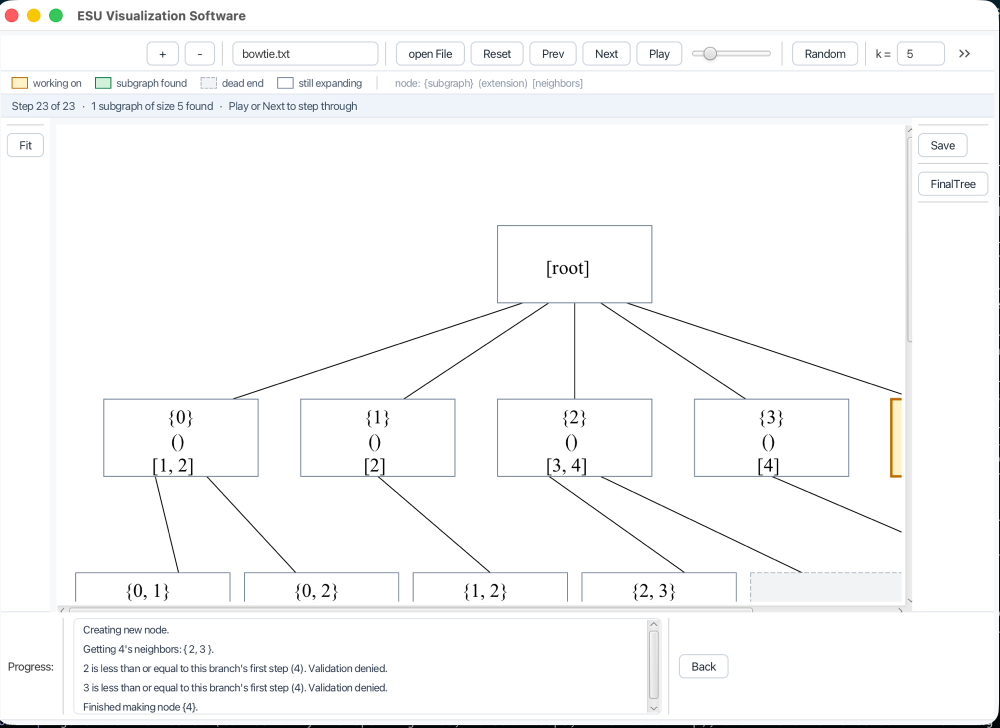

Watch a motif algorithm think.
ESU enumerates every connected subgraph of a given size in a network — the first step in finding the wiring patterns that make biological networks work. This desktop app draws the search as it happens, one step at a time, so you can see why the algorithm accepts or rejects each candidate.

What ESU does
Some small wiring patterns appear in a biological network far more often than chance alone would explain. Those patterns — network motifs — are thought to be functional building blocks, and finding them means counting every connected subgraph of a given size.
The naive approach finds the same subgraph many times over, once from each of its vertices. ESU — Enumerate SUbgraphs, from Sebastian Wernicke's work — avoids that with one rule: a branch may only grow into neighbours numbered higher than the vertex it started from. That single constraint makes every subgraph turn up exactly once.
It is a rule that takes ten seconds to state and much longer to picture. Which is the point of this app: the rejection is the interesting part, and it is invisible in a list of results.
Reading the picture
The graph sits on the left, the search tree on the right, and they stay in step with each other.
The graph
Your network. The subgraph being built is filled blue; the vertices it could add next are amber.
The tree
Each box is one subgraph, written as its vertices. The line down to it is the choice that produced it.
The path
The chain from start to the current box is drawn in blue, so any result traces back to its origin.
What the colours mean
Below the graph, the algorithm narrates itself: which neighbours it looked at, which it rejected, and which rule did the rejecting. Click any line to trace that node back to the start.
Run it
You need JDK 21. Nothing else — the Gradle wrapper fetches Gradle, and Gradle fetches JavaFX.
$ git clone https://github.com/loloDawit/ESU-Algorithm.git
$ cd ESU-Algorithm
$ ./gradlew run
Press Open graph for one of the bundled samples, or
Random to generate one and run it straight away. A graph
file is one edge per line — two whole numbers, such as
0 1.
How it is built
The algorithm is plain Java with no reference to the user interface, so it
can be tested and reused on its own. ESUTree.step() advancing
exactly one step is what makes pause-and-step possible at all.
Correctness is checked against a brute-force oracle: enumerate every subset of the right size, keep the connected ones, and require ESU to return exactly that set with no duplicates. Two other properties are pinned by tests — that a step reached by replay is identical to one reached by stepping, and that the tree layout centres every parent over its children without overlaps.
What changed since 2018
This began as a 2018 university project on JavaFX 8 and NetBeans. It no longer built: JavaFX left the JDK in version 11, and the APIs it used were deleted in version 9. The algorithm itself needed no changes — it passes the oracle unaltered. Everything around it did.
The largest problem was invisible from the outside. Every log entry deep-copied the entire search tree, and the app kept a full copy of the tree after every step so it could go backwards. Replaying the algorithm turns out to be far cheaper than remembering it:
| Graph | Memory before | After |
|---|---|---|
| 20 nodes, k=5 | 1,260 MB | 0 MB |
| 35 nodes, k=5 | timed out past 25 s | 2 MB |
| 50 nodes, k=4 | exhausted a 3 GB heap | 1 MB |
| 120 nodes, k=6 | unreachable | 53 MB |
The full account is in the commit history.